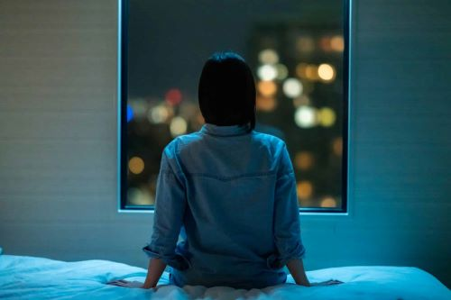
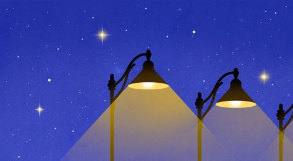
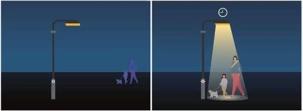
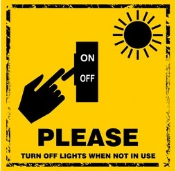
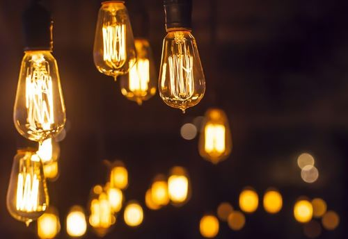
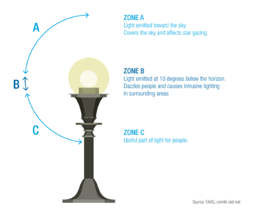

Light!
Artificial Light, mankind's greatest invention, but as any other thing in the universe it comes with disadvantages too. Have you ever wondered why you can't see the stars the way they are shown in the pictures ? Well, unfortunately it's a because of light pollution and only a few people have the oppurtunity to witness this beautiful view of the night sky.
But What Exactly is this "Light Pollution" ?
Light Pollution is the presence of anthropogenic artificial light in otherwise dark conditions, or in simple terms its the presence of any unwanted, inappropriate, or excessive artificial lighting. In a descriptive sense, the term light pollution refers to the effects of any poorly implemented lighting sources, during the day or night. Light pollution can be understood not only as a phenomenon resulting from a specific source or kind of pollution, but also as a contributor to the wider, collective impact of various sources of pollution.
How does it affect us?
Light pollution, or the excessive use of artificial light at night, can have many negative effects on human health, including:
· Sleep disruption
· Circadian rhythm disruption
· Reduced melatonin production
· Increased stress
· Altered hormone production
· Energy waste
· Loss of night sky views
Only us?
No, its not just humans being affected for their inefficiency but also wildlife and the ecosystem is being affected in the ways we have least expected.
· Disorienting
· Attracting prey
· Repelling animals
· Altering reproductive cycles
· Disrupting ecosystems
· Affecting plants
· Bird's die due to misdirecting light sources
How to deal with this?
Light pollution, or the excessive use of artificial light at night can be reduced and controlled by following the right approach and making informed decisions which include:
· Use the right lighting
Use LED or compact fluorescent (CFL) bulbs, which are more energy efficient and emit a more focused light. Use warm-colored bulbs, such as amber, yellow, or warm-white, to help with night vision.
· Shield your lights
Use light shields to direct light downward and prevent it from escaping upward.
· Use motion sensors and timers
Use motion sensors or timers to turn lights on and off automatically when needed.
· Turn off lights when not in use
Turn off lights in empty buildings, or in your home before you go to sleep.
· Encourage others to reduce light pollution
Ask your neighbors to reduce their light pollution, especially to reduce glare and light trespass into your domain
· Let people know
Promote less usage of light in your community, and advocate for stronger planning policies.
What is Mission Milkyway?
MISSION MILKYWAY
Mission Milkyway is all about spreading awareness among people and make them realize how bad inefficient lighting is for humans as well as for wildlife. With Mission Milkyway we try to make the earthians to not be noctalgic!
Join Us!
So are you ready to embark on the quest to preserve the night?
Reach out to us on our instagram page!
Contact Us
Email: missionmilkyway12@gmail.com
Instagram: mission__milkyway